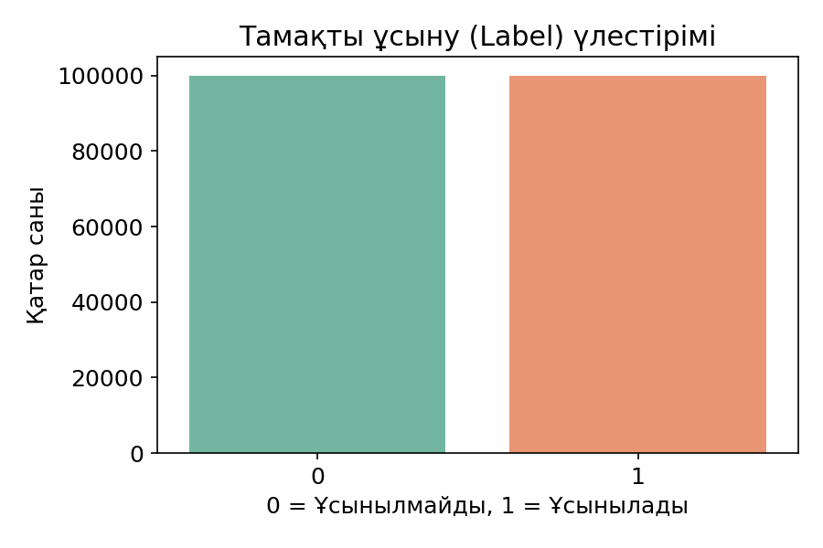
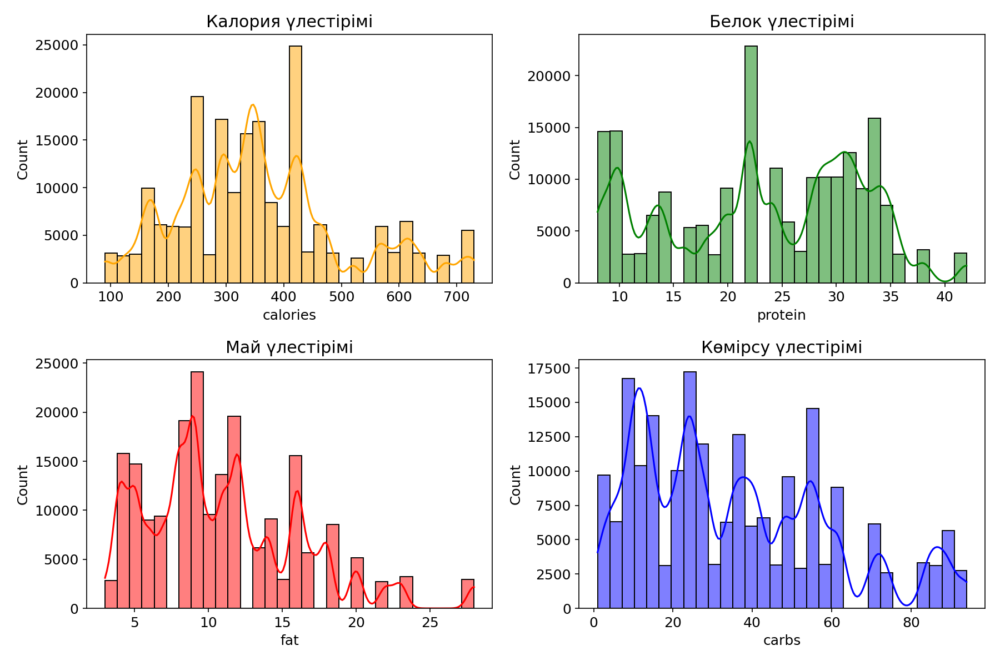
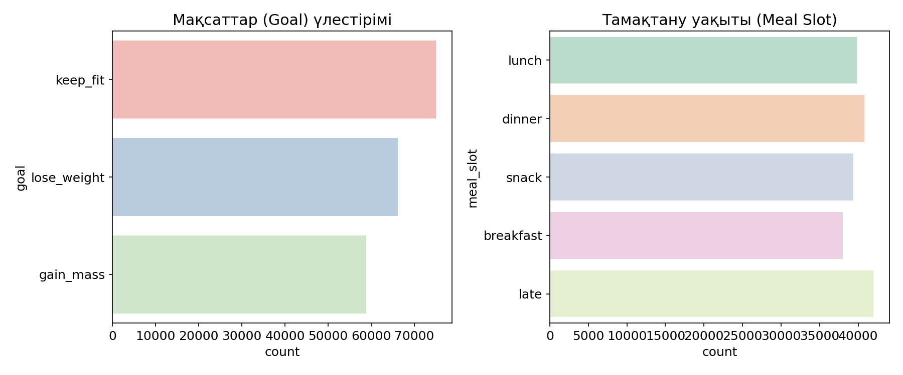
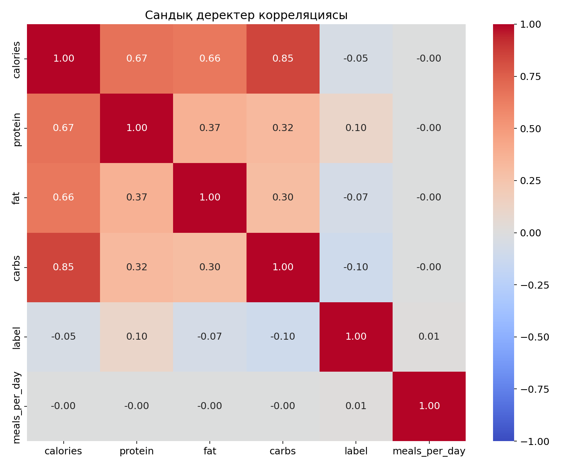

Бұл құжатта nutrition_recommendation_sampled.csv датасетіне жасалған Exploratory Data Analysis (EDA) нәтижелері көрсетілген.
Модельдің үйренуі үшін датасетте қанша "Ұсынамыз" (1) және "Ұсынбаймыз" (0) жауаптары бар екенін көрсететін график.

Базадағы тамақтардың калориясы, белогы, майы және көмірсулары қаншалықты жиі кездесетінін көрсететін гистограмма (Histogram).

Қолданушылар көбінесе қандай мақсатпен тамақ іздейді және қай уақытқа сұраныс көбірек түсетіні көрсетілген.

Деректер бір-бірімен қаншалықты байланысты екенін көрсетеді (Pearson Correlation).
